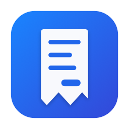

Privacy Policy
Receipts: Budget & Spending
Last updated: 1 October 2026
Receipts is developed by Simone Angeletti, an individual developer (“I”). This policy explains what happens to your data when you use the app on iPhone, iPad and Mac. The short version: I don't collect any of it.
What I collect
Nothing. The app has no account, no analytics, no advertising and no tracking, and it contains no third-party code. I have no server and I never receive your expenses, income, photos or location.
Where your data is stored
- On your device. Everything you enter (expenses, income, categories, planned expenses, receipt photos and settings) is stored inside the app on your device.
- In your iCloud. If you're signed in to iCloud, the app keeps a copy in your private iCloud database so it can sync between your devices. That data belongs to your Apple Account and is handled by Apple under the Apple Privacy Policy. I can't access it.
Permissions the app asks for
- Camera, to photograph receipts. The total is read on the device with Apple's text recognition; the photo isn't sent anywhere.
- Photos: you choose a picture with the system picker, so the app only sees the photo you pick.
- Approximate location, only to work out which country you're in and suggest its currency for a new expense. The country is found with Apple's geocoding service. The app doesn't store your location.
- Notifications, for reminders about planned expenses and category limits. They are scheduled on the device.
You can turn each permission off at any time in the system settings.
Internet connections
The app downloads the public table of euro reference exchange rates from the European Central Bank (ecb.europa.eu), at most every 12 hours. No personal data is sent with that request. As with any web request, the ECB's servers can see your IP address; see the ECB data protection page. You can turn the download off in Settings › Expenses in other currencies.
Sources
Exchange rates: European Central Bank (source: ECB; published for information purposes only). Country-to-currency table: Unicode CLDR. Emoji list: Unicode Emoji 15.1. Unicode data is used under the Unicode License V3, shown in the app under Settings › Sources and legal notices.
Deleting your data
Settings › Data › Reset the app deletes everything in the app, and with iCloud on, on your other devices too. Deleting the app removes the data on that device. You can also remove the iCloud copy in Settings › [your name] › iCloud › Manage Account Storage.
Children
The app collects no data from anyone, including children.
Changes
If this policy changes, the new version will be published on this page with a new date.
Contact
Simone Angeletti — angelettisimonedeveloper@gmail.com
Scontrini: Budget e Spese
Ultimo aggiornamento: 1 ottobre 2026
Scontrini è sviluppata da Simone Angeletti, sviluppatore individuale («io»). Questa informativa spiega cosa succede ai tuoi dati quando usi l'app su iPhone, iPad e Mac. In breve: non ne raccolgo nessuno.
Cosa raccolgo
Niente. L'app non ha account, statistiche d'uso, pubblicità o tracciamento, e non contiene codice di terze parti. Non ho un server e non ricevo mai le tue spese, le entrate, le foto o la tua posizione.
Dove sono salvati i tuoi dati
- Sul tuo dispositivo. Tutto quello che inserisci (spese, entrate, categorie, spese pianificate, foto degli scontrini e impostazioni) è salvato nell'app sul tuo dispositivo.
- Nel tuo iCloud. Se hai effettuato l'accesso a iCloud, l'app ne tiene una copia nel tuo database iCloud privato per sincronizzare i dispositivi. Quei dati appartengono al tuo Account Apple e li gestisce Apple secondo la sua informativa sulla privacy. Io non posso vederli.
Permessi che l'app chiede
- Fotocamera, per fotografare gli scontrini. Il totale viene letto sul dispositivo con il riconoscimento del testo di Apple; la foto non viene inviata a nessuno.
- Foto: scegli l'immagine con il selettore di sistema, quindi l'app vede solo la foto che scegli.
- Posizione approssimativa, solo per capire in che Paese sei e proporre la sua valuta nelle nuove spese. Il Paese si ricava con il servizio di geocodifica di Apple. L'app non salva la tua posizione.
- Notifiche, per i promemoria delle spese pianificate e gli avvisi sui limiti delle categorie. Vengono programmate sul dispositivo.
Puoi togliere ogni permesso quando vuoi dalle impostazioni di sistema.
Connessioni a Internet
L'app scarica la tabella pubblica dei cambi di riferimento dell'euro dalla Banca Centrale Europea (ecb.europa.eu), al massimo ogni 12 ore. Con questa richiesta non viene inviato nessun dato personale. Come per qualsiasi pagina web, i server della BCE vedono il tuo indirizzo IP; vedi la pagina sulla protezione dei dati della BCE. Puoi disattivare lo scaricamento in Impostazioni › Spese in altre valute.
Fonti
Cambi: Banca Centrale Europea (fonte: BCE; pubblicati solo a scopo informativo). Tabella Paese-valuta: Unicode CLDR. Elenco delle emoji: Unicode Emoji 15.1. I dati Unicode sono usati secondo la Unicode License V3, riportata nell'app in Impostazioni › Fonti e note legali.
Cancellare i tuoi dati
Impostazioni › Dati › Ripristina l'app cancella tutto nell'app e, con iCloud attivo, anche sugli altri tuoi dispositivi. Eliminando l'app si cancellano i dati su quel dispositivo. Puoi togliere anche la copia su iCloud da Impostazioni › [il tuo nome] › iCloud › Gestisci spazio dell'account.
Minori
L'app non raccoglie dati da nessuno, minori compresi.
Modifiche
Se questa informativa cambia, la nuova versione verrà pubblicata su questa pagina con una nuova data.
Contatti
Simone Angeletti — angelettisimonedeveloper@gmail.com